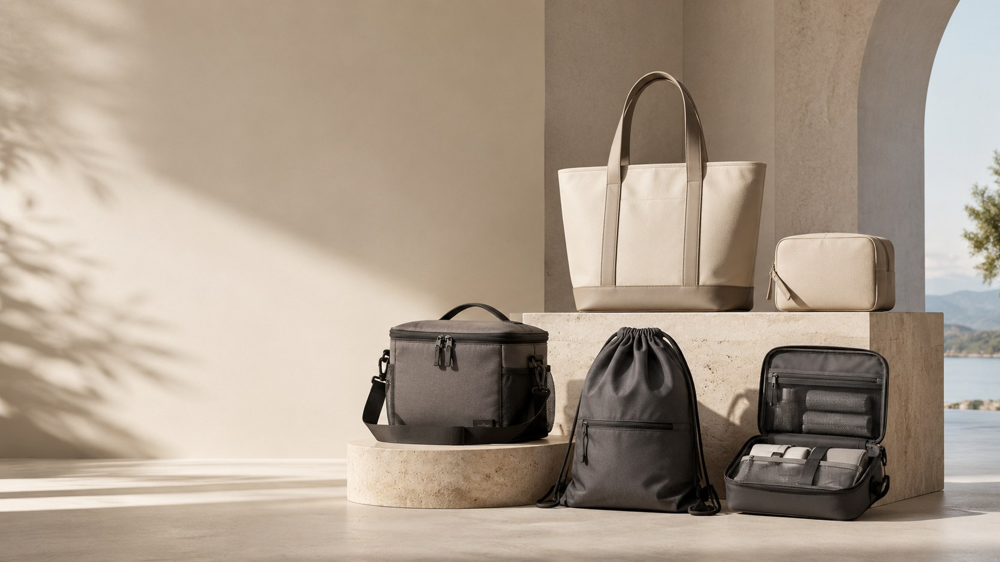
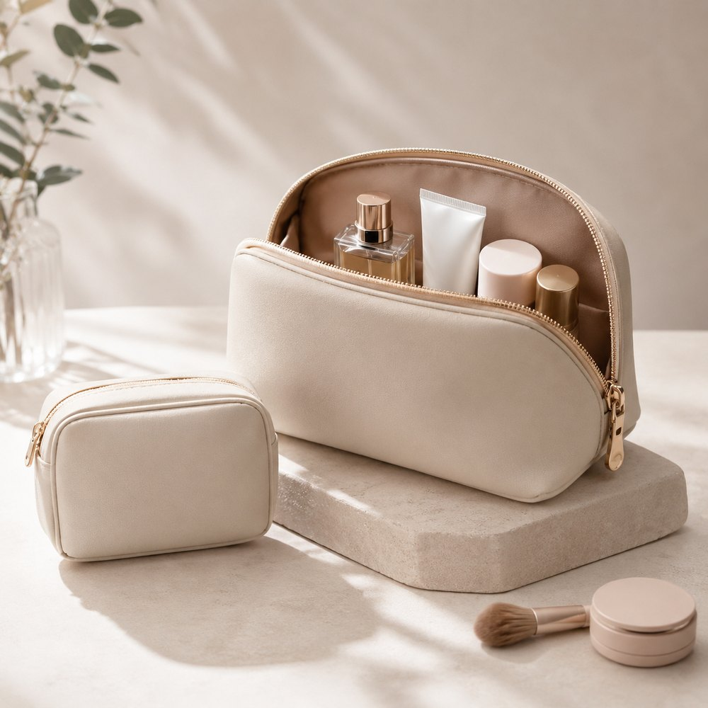
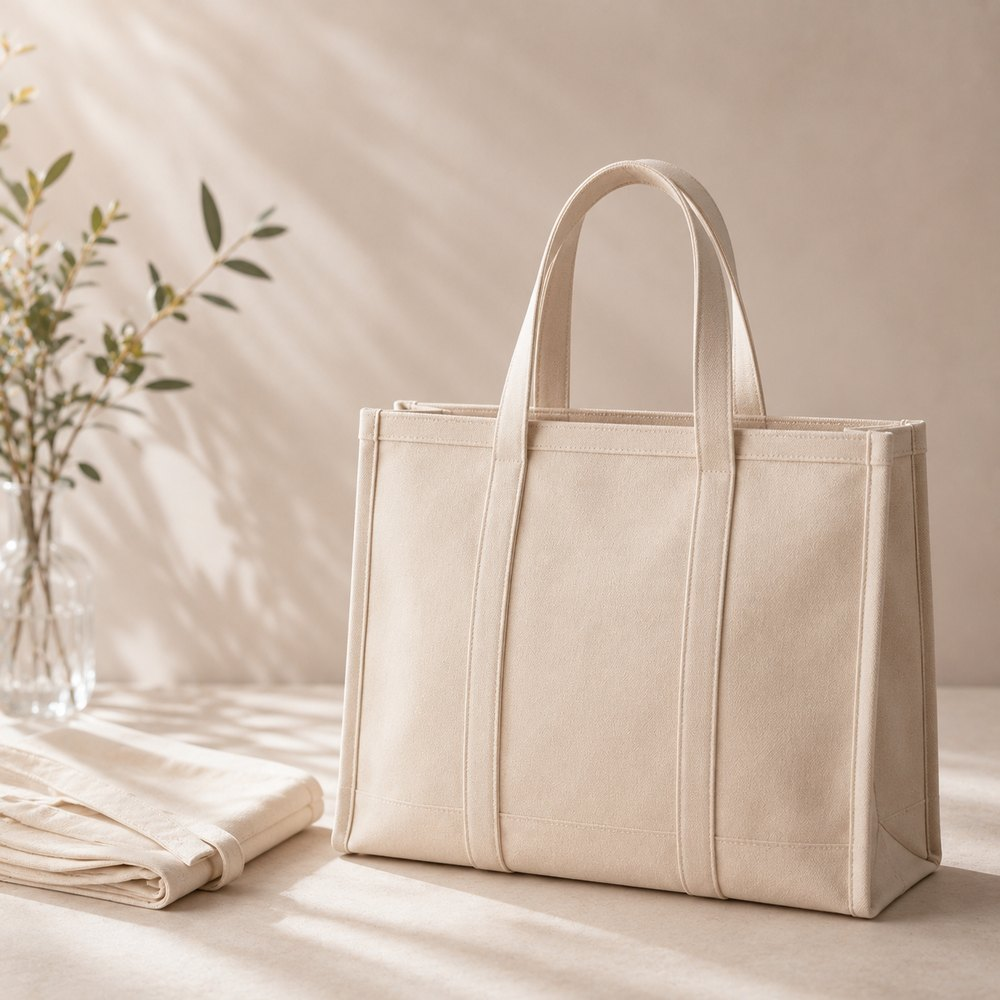
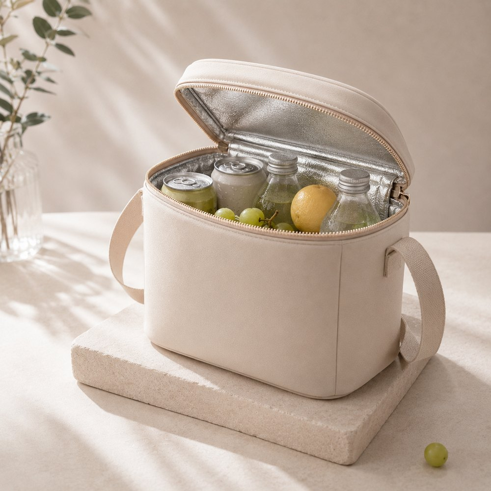
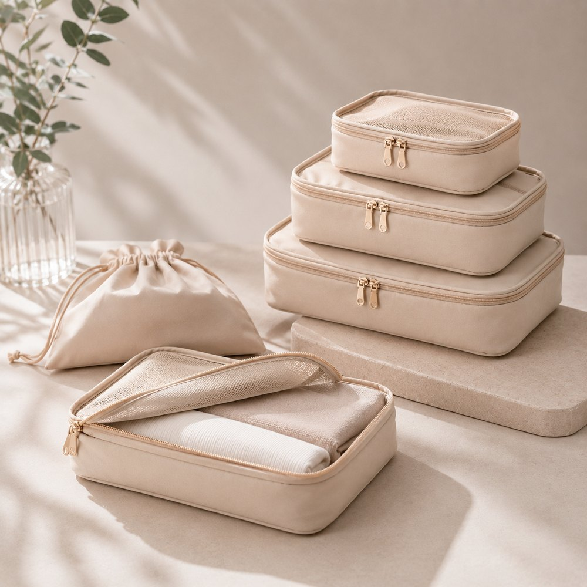
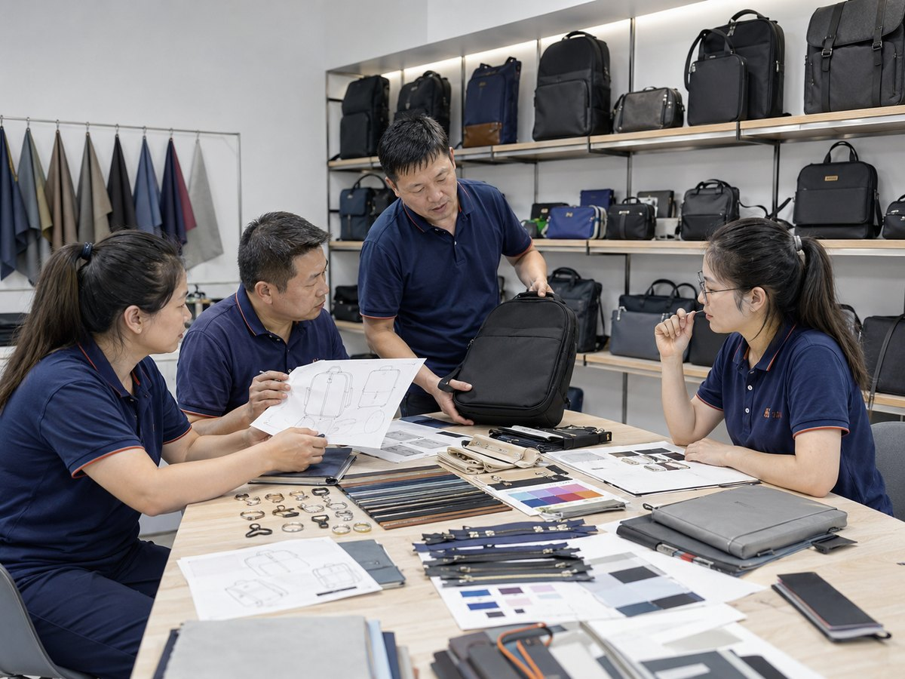
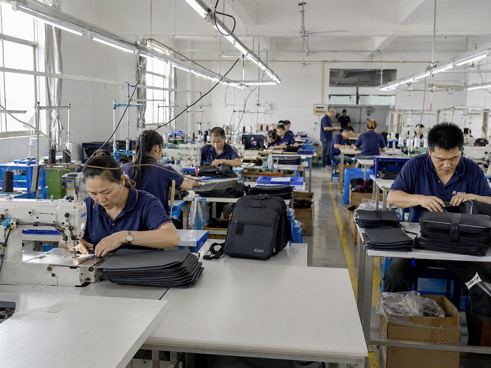
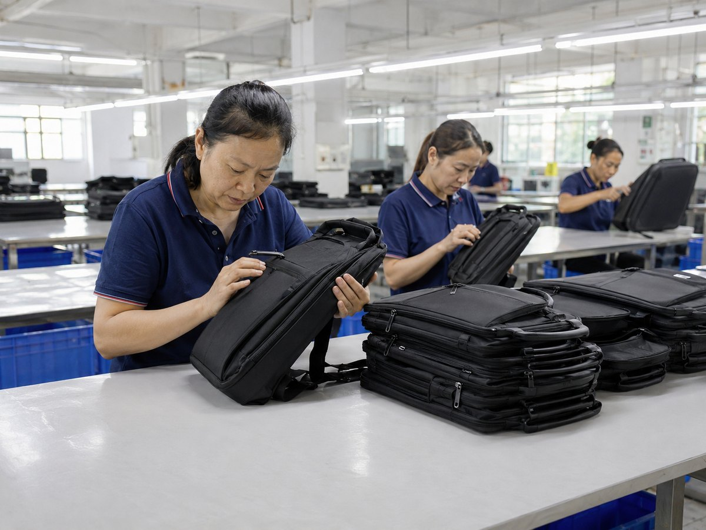
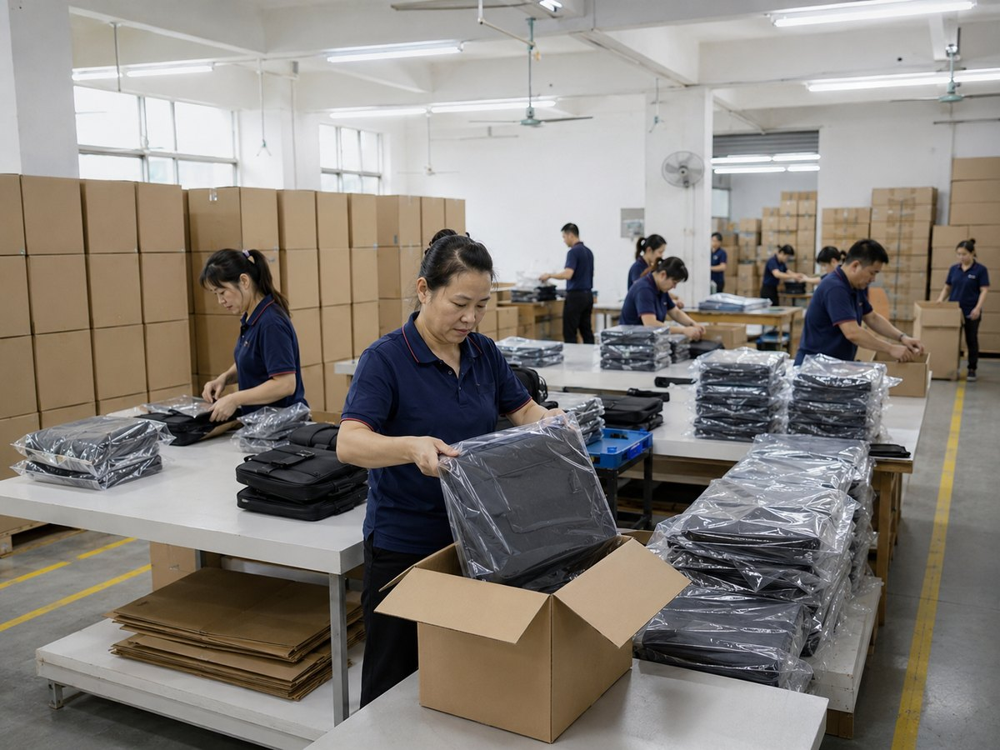

OEM & ODM Custom Bags
Custom Bag Manufacturer for B2B Brands
Send your design, sample photo or product idea. We help review materials, logo methods, structure and export packing before production.
Fast Project Review
One Form for Quote and Design Brief
Request a quote and send your design brief through the same form. Tell us your bag type, material, logo method, quantity and packing needs, and we will review the project direction.
Bag Type
Material
Logo
Quantity
Packing
Send Brief / Request Quote →
Product Range
Custom Bag Categories for Wholesale Projects
Choose by product type, material or application. Each category can be customized by size, fabric, color, logo method, lining and retail packaging.

Cosmetic BagsCustom logo, zipper, lining and packaging for beauty brands.

Toiletry BagsWaterproof, clear, hanging or structured wash bag designs.

Shopping BagsReusable tote bags for retail, events and promotional projects.

Cooler BagsInsulated bags for food delivery, picnic and retail promotions.

Sports BagsDurable gym, team and outdoor bags with brand customization.

Drawstring BagsLightweight giveaway bags for schools, sports and events.

Travel OrganizersPacking cubes, organizers and cases for travel retail programs.

Custom OEM BagsSend your sample, sketch or idea. We help develop the bag.
Buyer Solutions
Custom Bag Solutions by Business Need
Different buyers need different bag structures, materials and packing methods. Choose a direction that matches your market and we can help turn it into a manufacturable custom bag project.
Beauty & Skincare BrandsCosmetic pouches, sample bags, vanity cases and retail gift packaging.
Travel & HospitalityToiletry bags, packing cubes, laundry bags and amenity organizers.
Food Delivery & Cooler ProjectsInsulated lunch bags, cooler totes, delivery bags and picnic carriers.
Retail & Promotional GiftsReusable shopping bags, giveaway drawstring bags and branded event totes.
Sports & Outdoor ProgramsGym bags, team sacks, swim mesh bags and lightweight outdoor organizers.
Corporate Gift SetsPrivate label pouches, welcome bags, holiday packaging and logo sample kits.
Customization
Build Custom Bags for Your Brand
For B2B buyers, the important question is not only whether a factory has similar styles, but whether the factory can develop your own project. Olaytech supports OEM and ODM customization from material selection to finished export packing.
Send Your Design Brief →Canvas, cotton, nylon, Oxford, PVC, EVA, PU, RPET, neoprene and more.
Adjust dimensions, pockets, handle length, gusset and internal structure.
Screen printing, heat transfer, embroidery, woven label, patch or metal plate.
Zippers, pulls, buckles, webbing, straps, snaps and decorative details.
Mesh, waterproof lining, insulated lining, clear pockets and dividers.
Polybag, hang tag, care label, carton packing and retail-ready packaging.
Quote Checklist
What Helps Us Review Your Project Faster?
A clear request saves time for both sides. Even if your project is not final yet, these details help us suggest a realistic solution.
- Reference style: photo, sketch, sample or product link.
- Material idea: canvas, Oxford, nylon, EVA, PVC, neoprene, RPET or other fabric.
- Logo method: printing, embroidery, woven label, patch, zipper pull or metal plate.
- Order plan: target quantity, delivery schedule, packing and destination market.
Why Buyers Choose Us
Built for Long-Term Custom Bag Projects
For B2B buyers, a good factory should help review details before production, not just make a bag from a picture. Olaytech supports practical development from idea to packed order.
Review structure, size, materials, logo placement and packing details before mass production.
Get practical advice for canvas, Oxford, nylon, EVA, PVC, neoprene, RPET and other bag materials.
Check stitching, zipper, shape, logo position and workmanship before cartons are prepared.
Support hang tags, labels, individual packing, cartons and shipment preparation for global buyers.

Factory Strength
From Sample Review to Bulk Production
Olaytech supports long-term OEM and ODM bag projects with sample development, material review, sewing production, quality inspection and export packing.
100+ Sewing WorkersOEM Project SupportQC Before PackingExport Order Handling
Manufacturing Process
From Idea to Export-Ready Custom Bags
Like mature manufacturing sites, this section makes the production path easy to understand: brief review, sample, production, inspection and packing.

01Design Review
Review artwork, reference samples, materials, structure and target price.

02Bulk Production
Cutting, sewing, assembly and production control for custom bag orders.

03Quality Inspection
Check stitching, zipper, shape, logo placement and overall workmanship.

04Export Packing
Protective packaging, carton packing and shipment preparation for buyers.
Buyer Guide
Useful Guides for Custom Bag Buyers
Practical guides help buyers compare materials, logo methods and factory capability before starting a custom bag project.
How To Choose A Reliable Custom Bag ManufacturerFactory capability, communication, samples and quality control.Read Guide →
Custom Bag Material GuideHow to choose canvas, nylon, Oxford, EVA, PVC, RPET and more.Read Guide →
Logo Methods for Custom BagsCompare printing, embroidery, labels, patches and hardware branding.Read Guide →
FAQ
Questions B2B Buyers Usually Ask
These answers help buyers understand your customization and order process quickly.
What is your MOQ for custom bags?
MOQ depends on the bag type, material, logo method and packaging. Send your target style and quantity so we can suggest a practical solution.
Can you make bags with our logo?
Yes. We support printing, embroidery, woven labels, rubber patches, zipper pulls, hang tags, care labels and custom packaging.
How long does sample development take?
Timing depends on the structure and material. Our team can review your artwork, reference sample or product idea before confirming the development schedule.
What materials can we choose?
Common materials include canvas, nylon, polyester, Oxford fabric, PVC, EVA, PU leather, felt, non-woven fabric, RPET and neoprene.
Can you support export packing?
Yes. We support individual packing, carton packing, custom packaging options and shipment preparation for global B2B orders.
What should I send to get a faster quote?
Please send the bag type, size, material idea, logo method, target quantity, packing requirement and reference images if available.
Can you produce based on our reference sample?
Yes. You can send a physical sample, photos, drawings or a similar market reference. We will review the structure, material and production details before quoting.
Can we mix materials and colors in one project?
Yes, depending on the order quantity and material availability. We can help check color matching, fabric combinations and practical production requirements.
Can you help improve our bag structure?
Yes. For OEM and ODM projects, we can suggest changes to pockets, lining, handles, zipper placement, size and packing based on your target use.
Start Your Project
Ready to Build Your Custom Bag Project?
Send your design brief, sample photo, material requirement, logo method and target quantity. We will review the details and help you move from concept to sample and bulk production.